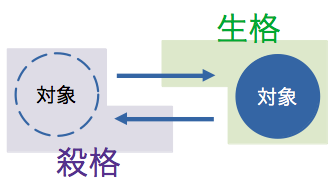
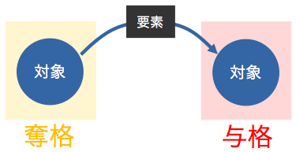

現行文法は ver.0.3 (2022-10-16)。
1. 音韻論
1.1 音素
カタパイ語の各音素は子音(consonants)・母音(vowel)から構成される。
カタパイ語では独自のアブギダ「花影（かえい）文字」を使用する。また、ラテン文字またはキリル文字での転写も用いられる。ラテン字転写で使う文字は以下の通り。
- 母音：a, e, i, o, u
- 子音：p, t, k, f, s, h, c, m, n, q, r, l, y, w, x
1.1.1 母音
| 花影文字 | ラテン文字 | キリル文字 | 標準音価 | 読み |
|---|---|---|---|---|
| qa | a | а | [a] | あ |
| qe | e | е | [e] | え |
| qi | i | и | [i] | い |
| qo | o | о | [o] | お |
| qu | u | у | [u] | う |
1.1.2 子音
| 花影文字 | ラテン文字 | キリル文字 | 標準音価 | 読み |
|---|---|---|---|---|
| p | p | п | [p] | ぱ行 |
| t | t | т | [t] | た行 |
| k | k | к | [k] | か行 |
| f | f | ф | [f] | ふぁ行 |
| s | s | с | [s] | さ行 |
| h | h | х | [h] | は行 |
| c | c | ц | [ts] | つぁ行 |
| m | m | м | [m] | ま行 |
| n | n | н | [n] | な行 |
| g | g | г | [ŋ] | か゚行 |
| r | r | р | [r] | ら行 |
| l | l | л | [l] | ら行 |
| y | y | й | [j] | や行 |
| w | w | в | [w] | わ行 |
| x | x | ш | [ʃ] | しゃ行 |
1.2 文字
カタパイ語は通常「花影文字」で表記される。 花影文字は14種の子音字および5種の母音記号からなるアブギダである。 連母音 aa ee ii oo uu を表記する際には a e i o u を2回分綴る。 母音記号がなく単に子音字のみを書いた場合、それは子音単体を表す。
| ∅ | p | t | k | f | s | h | c | m | n | g | r | l | y | w | x | |
|---|---|---|---|---|---|---|---|---|---|---|---|---|---|---|---|---|
| ∅ | q | p | t | k | f | s | h | c | m | n | g | r | l | y | w | x |
| a | qa | pa | ta | ka | fa | sa | ha | ca | ma | na | ga | ra | la | ya | wa | xa |
| e | qe | pe | te | ke | fe | se | he | ce | me | ne | ge | re | le | ye | we | xe |
| i | qi | pi | ti | ki | fi | si | hi | ci | mi | ni | gi | ri | li | yi | wi | xi |
| o | qo | po | to | ko | fo | so | ho | co | mo | no | go | ro | lo | yo | wo | xo |
| u | qu | pu | tu | ku | fu | su | hu | cu | mu | nu | gu | ru | lu | yu | wu | xu |
1.2.3 特殊な発音
-pw-, -mw- (-pw-, -mw-) は [pʷ], [mʷ] で発音される。 -ny- (-ny-) は [ɲ] で発音される。
1.3 アクセント
アクセントによる語の弁別は行わない。
2. 形態論
2.1 品詞分類
品詞は以下の6種類がある：
- 名詞 noun
- 動詞 verb
- 形容詞 adjective
- 副詞 adverb
- 接続詞 conjugation
- 心態詞 attitudinal
2.1.1 可換品詞
カタパイ語の品詞のうち、名詞・動詞・形容詞・副詞の4つは可換品詞である。 これらは相互に品詞転換が可能で、品詞語尾を語幹に接続することで品詞転換がなされる。 品詞語尾はそれぞれ名詞：-li(-li)、動詞：-la(-la)、形容詞：-le(-le)、副詞：-lu(-lu)であるが、通常、名詞語尾-li(-li)は省略される。 辞書形、題目、名詞句（無述語文）、呼応用法のときには名詞語尾-li(-li)が必須。
| 品詞語尾 | 品詞 | |
|---|---|---|
| -li | -li | 名詞 |
| -la | -la | 動詞 |
| -le | -le | 形容詞 |
| -lu | -lu | 副詞 |
2.2.2 機能品詞
接続詞・心態詞の2つは機能品詞である。 可変品詞とは違い品詞転換は出来ない。
2.2 名詞の格
カタパイ語の名詞は、生格(genitive)・殺格(necative)・与格(dative)・奪格(ablative)の4つ。
それぞれ格接辞-nin(-nin)、-se(-se)、-yo(-yo)、-ten(-ten) を用いる。語末が格語尾であるものは名詞扱いになる。
これらの格は、概ね次のような意味を表す。
| 格接辞 | 格 | 意味 | |
|---|---|---|---|
| -nin | -nin | 生格 | 〜は生まれる |
| -se | -se | 殺格 | 〜は殺される |
| -yo | -yo | 与格 | 〜は与えられる |
| -ten | -ten | 奪格 | 〜は奪われる |
なお、生格を形容詞的な「〜の」の意味には使わない。 修飾は形容詞で行う。 所有の意味の「～の」は所有代接辞を用いる。
2.2.1 生格・殺格の基本イメージ
生格と殺格は、対象存在の有無、あるいは対象の生成と消滅に関する双対概念である。
動詞で表される行為により発生する、あるいは存在する対象は生格 -nin (-nin)で表す。 対称的に、動詞で表される行為により消滅する、あるいは存在しない対象は殺格 -se (-se)で表す。
2.2.2 与格・奪格の基本イメージ
与格と奪格は、何らかの要素を受け渡す対象についての双対概念である。
何らかの要素を受け取る対象は与格 -yo (-yo)で表現する。 一方で、何らかの要素を放出する、または奪われる対象は奪格 -ten (-ten)で表現する。
与格対象・奪格対象間でやり取りされる「要素」自体は、状況に応じて生格、殺格、または主題としての呼格が用いられる。
2.2.3 生格用法
- 主体生格
- 生成生格
2.2.4 殺格用法
- 殺害殺格
- 停止殺格
- 消失殺格
2.2.5 与格用法
- 供与与格
- 方向与格
2.2.6 奪格用法
- 方向奪格
- 分離奪格
2.2.7 格抱合
格抱合(case incorporation)により格含みの意味を包含した名詞を作ることができる。
| 格抱合接辞 | 格 | |
|---|---|---|
| -niyi | -niyi | 生格 |
| -seyi | -seyi | 殺格 |
| -yoyi | -yoyi | 与格 |
| -teyi | -teyi | 奪格 |
例えば、cicigi-(cicigi-)「書く（こと）」に与格抱合接辞 -yoyi(-yoyi)を抱合させて新たな語幹 cicigiyoyi-(cicigiyoyi-)「内容を書き下す先の媒体」を構成する。
2.3 接辞
カタパイ語では、語根に接辞を接続させることで、語義を派生させることができる。2.3.1 一般接辞
カタパイ語における一般接辞は接頭辞 ri-(ri-)「～の人」のみで、これは氏族、国家、場所、形容詞的な語彙に接続する。
- ripwuce (ripwuce)
「愚か者」
2.3.2 所有代接辞
| 所有代接辞 | 人称 | |
|---|---|---|
| -hu | -hu | 1sg |
| -mwu | -mwu | 2sg |
| -nya | -nya | 3sg |
| -ca | -ca | 1pl incl |
| -kayi | -kayi | 1pl excl |
| -kamwu | -kamwu | 2pl |
| -qira | -ira | 3pl |
| -ni | -ni | 4g |
2.4 代名詞
人称代名詞と指示代名詞がある。 文法的な振る舞いは一般の名詞と同じ。
2.4.1 人称代名詞
| 人称代名詞 | 人称 | |
|---|---|---|
| ga | ga | 1sg |
| ko | ko | 2sg |
| qiqa | ia | 3sg |
| kita | kita | 1pl incl |
| kamami | kamami | 1pl excl |
| kamwu | kamwu | 2pl |
| qi | i | 3pl |
2.4.2 指示代名詞
| 指示代名詞 | 備考 | ||
|---|---|---|---|
| qeqe | ee | これ（近称） | 話者の近く |
| qena | ena | それ（中称） | 相手の近く |
| qare | are | あれ（遠称） | 話者＆相手から離れている |
| qoqo | oo | 例のアレ（定称） | ここに存在しないか、過去のもの |
2.5 接続詞
接続詞は、文と文、節と節、語と語を繋ぐ。 順接はma (ma)、逆接はgaqe (gae)を用いる。
- xake ma siwo (xake ma siwo)
「上と下」
2.6 心態詞
常に文頭、動詞より前に置かれる。
| 敬体命令 | 敬体禁止 | 常体命令 | 常体禁止 | 蔑体命令 | 蔑体禁止 | ||
|---|---|---|---|---|---|---|---|
| -te -te | -ta -ta | -re -re | -ra -ra | -ne -ne | -na -na | ||
| 祈祷 | maya- maya- | mayate mayate | mayata mayata | mayare mayare | mayara mayara | mayane mayane | mayana mayana |
| 要請 | yasu- yasu- | yasute yasute | yasuta yasuta | yasure yasure | yasura yasura | yasune yasune | yasuna yasuna |
| 要求 | qane- ane- | qanete anete | qaneta aneta | qanere anere | qanera anera | qanene anene | qanena anena |
| 希望 | wufu- wufu- | wufute wufute | wufuta wufuta | wufure wufure | wufura wufura | wufune wufune | wufuna wufuna |
| 勧誘 | fanaqu- fanau- | fanaqute fanaute | fanaquta fanauta | fanaqure fanaure | fanaqura fanaura | fanaqune fanaune | fanaquna fanauna |
3. 統語論
3.1 基本語順
類型論的にはVSO-NA語順（動詞・主語・目的語/被修飾語・修飾語）もしくはVOS-NA語順（動詞・目的語・主語/被修飾語・修飾語）が支配的である。 ただしカタパイ語では主語や目的語を規定しておらず、生殺与奪格の範疇で語順が定まるため、主語・目的語の語順は一定ではないともいえる。 また、文全体において名詞の呼応用法を用いて題述構造（題目・述部）をとることがある。
3.2 無述語文
本の題名など、述語が存在しない文を無述語文と呼ぶ。 このとき主名詞には名詞語尾 -li(-li) を付加する。
3.3 名詞述語文
述語が名詞句で構成される文を名詞述語文と呼ぶ。この時の基本語順は「題目名詞―述部名詞」となる。 このとき、題目名詞と述部名詞の両方に名詞語尾 -li(-li) を付加する。
3.4 動詞述語文
述語が動詞句で構成される文を動詞述語文と呼ぶ。 この時の基本語順は「動詞―生格―殺格―与格―奪格」となる。
4. 語彙
外来語はカタパイ語の音素のみを用いて転写される。